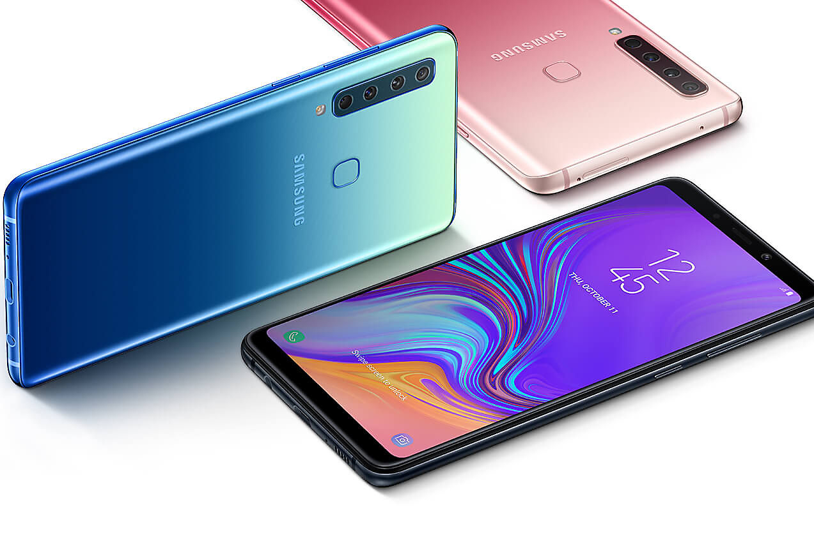
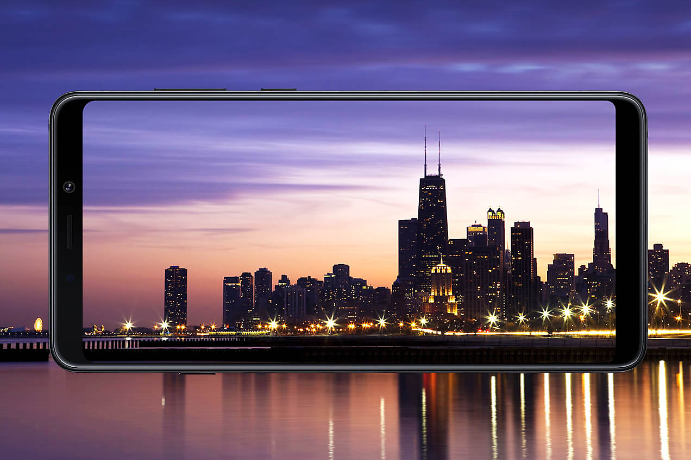
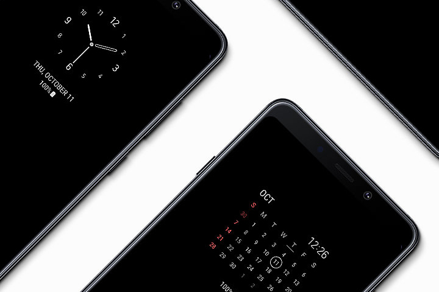
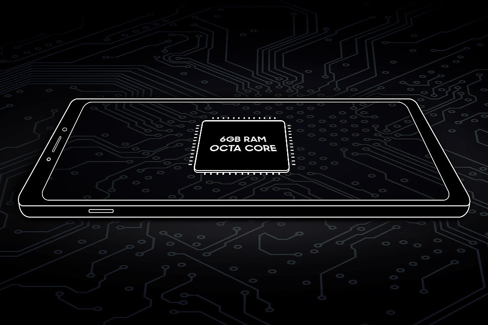
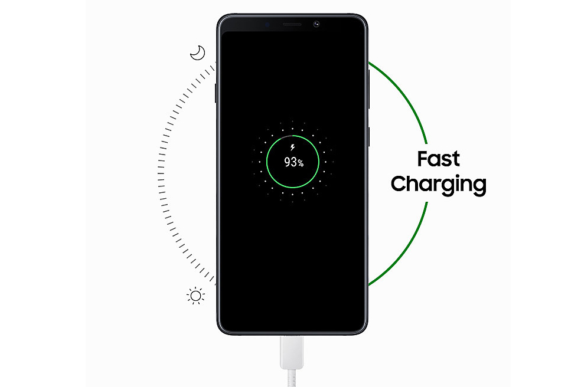
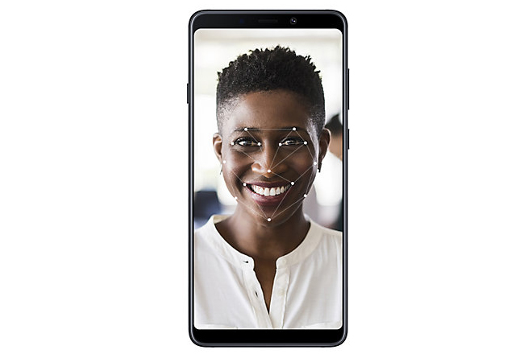

9.690.000 đ
Đánh giá chi tiết Samsung Galaxy A9 2018
Samsung Galaxy A9 2018 là mẫu smartphone đầu tiên trên thế giới có tới 4 camera chính. Với hệ thống camera thông minh, máy có khả năng chụp ảnh hết sức chuyên nghiệp.

Cả thế giới trong khung hình
Dễ dàng lưu giữ cả thế giới trong lòng bàn tay nhờ hệ thống 4 camera đỉnh cao lần đầu tiên trong lịch sử smartphone. Mỗi camera có một sứ mệnh riêng biệt, cho bạn những bức ảnh đẹp hoàn hảo ở mọi điều kiện. 4 cảm biến camera sau của Samsung A9 2018 bao gồm: camera chính 24MP khẩu độ lớn f/1.7 chuyên gia chụp đêm; camera tele 10MP khẩu độ f/2.4, hỗ trợ zoom quang 2x; camera góc siêu rộng 8MP khẩu độ f/2.4 để chụp ảnh rộng; camera đo độ sâu 5MP khẩu độ f/2.2 hỗ trợ chụp ảnh xóa phông. Ngoài ra A9 2018 còn có tính năng tối ưu hóa cảnh, tự động nhận diện và chỉnh sửa thông minh tùy theo đối tượng bạn chụp.

Tự tin thể hiện cá tính
Thiết kế đẹp mắt, kiểu dáng hiện đại và chất lượng hoàn thiện cao cấp giúp điện thoại Galaxy A9 2018 không chỉ thời trang mà còn rất thoải mái khi cầm trên tay. Bạn sẽ thể hiện cá tính của mình qua các phiên bản màu sắc đầy ấn tượng, nổi bật sau lớp vỏ kính 3D độc đáo. Một chiếc điện thoại đẹp hoàn hảo nằm gọn trong lòng bàn tay, A9 khiến người dùng yêu ngay từ cái nhìn đầu tiên.

Trải nghiệm niềm vui bất tận
Galaxy A9 sở hữu màn hình tuyệt vời kích thước lớn 6,3 inch độ phân giải cao Full HD+ công nghệ Super AMOLED dạng vô cực. Mọi thứ đều được hiển thị một cách sống động hơn bao giờ hết với độ tương phản cao, sắc nét, màu sắc chính xác. Bạn sẽ được tận hưởng niềm vui giải trí bất tận qua những bộ phim hay tựa game yêu thích.

Luôn đầy đủ những thông tin bạn cần
Màn hình luôn bật Always On sẽ luôn hiển thị các thông tin cơ bản như ngày, giờ, thông báo, phần trăm pin,… Nhờ vậy bạn luôn nắm được những thông tin quan trọng mà không cần phải liên tục cầm điện thoại lên mở khóa màn hình. Có rất nhiều tùy biến hiển thị Always On để điện thoại của bạn nhìn hiện đại hơn.

Trải nghiệm sức mạnh của hiệu năng cao
Samsung A9 2018 được trang bị bộ vi xử lý mạnh mẽ tám nhân đi cùng 6GB RAM và tối đa 128GB bộ nhớ trong. Cấu hình này đủ sức để đáp ứng xuất sắc mọi nhu cầu bạn muốn. Từ các tác vụ cơ bản như đọc báo, lướt web, xem phim cho đến những tựa game nặng, Galaxy A9 2018 đều thể hiện một cách mượt mà. Dung lượng RAM và bộ nhớ cực lớn giúp bạn mở được nhiều ứng dụng cùng lúc, thỏa sức lưu trữ bất cứ nội dung gì mà không sợ bộ nhớ bị đầy.

Sử dụng lâu hơn, sạc nhanh hơn
Viên pin Samsung Galaxy A9 có dung lượng rất cao 3800 mAh, đủ sức sử dụng trong thời gian lên đến 2 ngày mới cần phải sạc. Hơn thế nữa bạn cũng không phải đợi lâu khi sạc pin nhờ công nghệ sạc nhanh, cho phép bạn tiếp tục sử dụng thêm cả buổi chỉ sau 30 phút sạc.

Nâng tầm bảo mật
Bảo mật di động trên Galaxy A9 2018 hết sức nhanh chóng và an toán. Công nghệ nhận diện khuôn mặt và cả cảm biến vân tay cung cấp cho bạn hai phương thức bảo mật khác nhau để sử dụng một cách linh hoạt. Chỉ cần chạm ngón tay vào hoặc đơn giản là cầm máy lên, A9 2018 sẽ nhận diện và mở khóa ngay lập tức.
